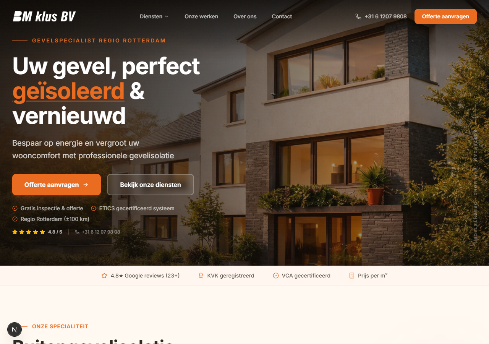
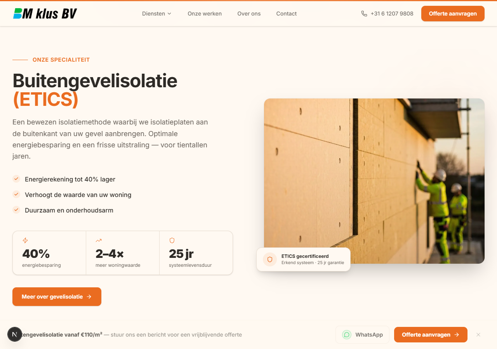
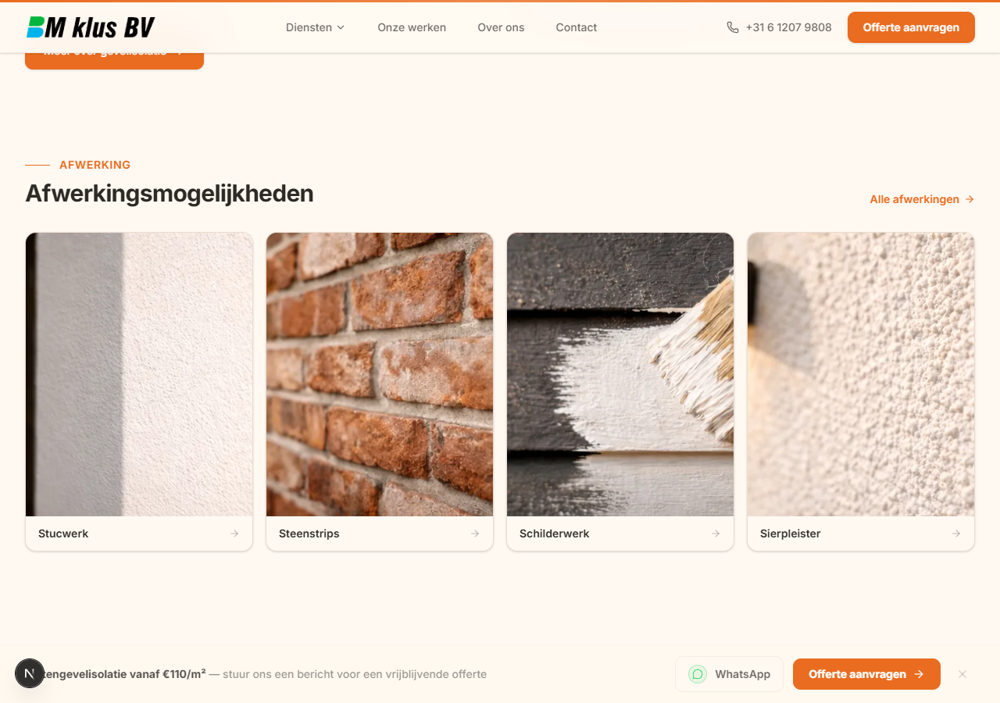
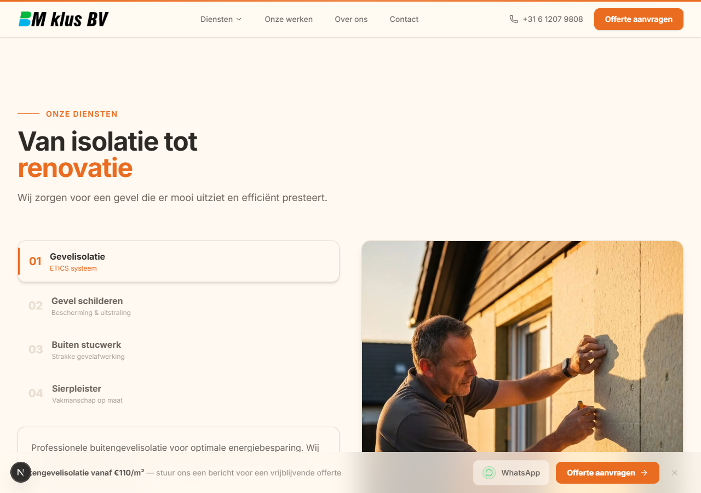
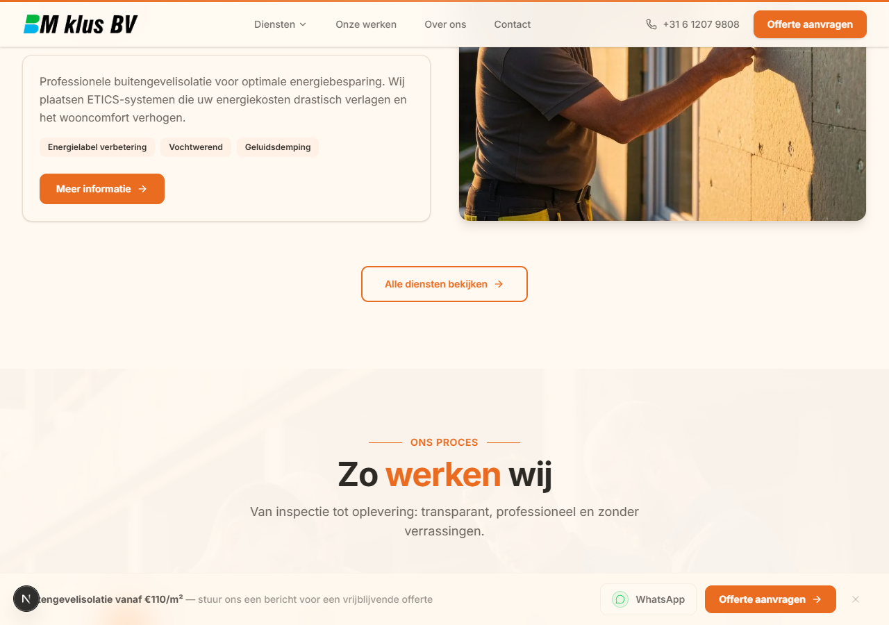
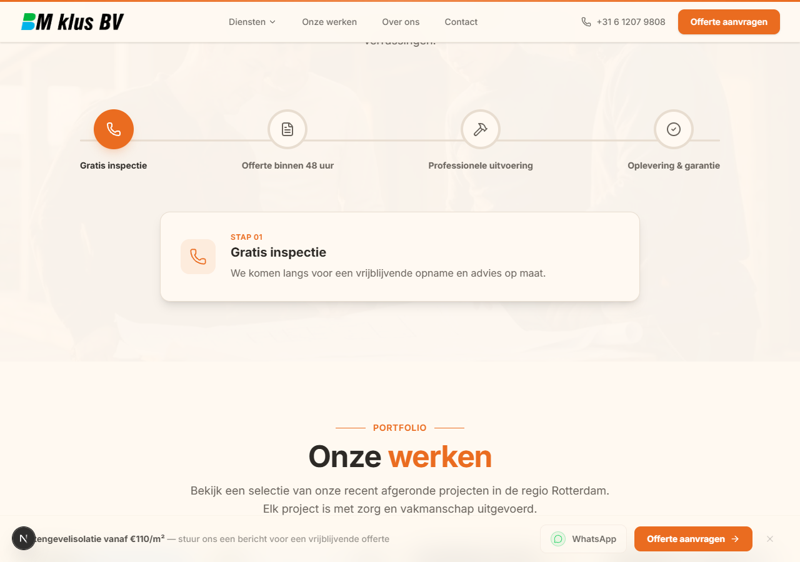
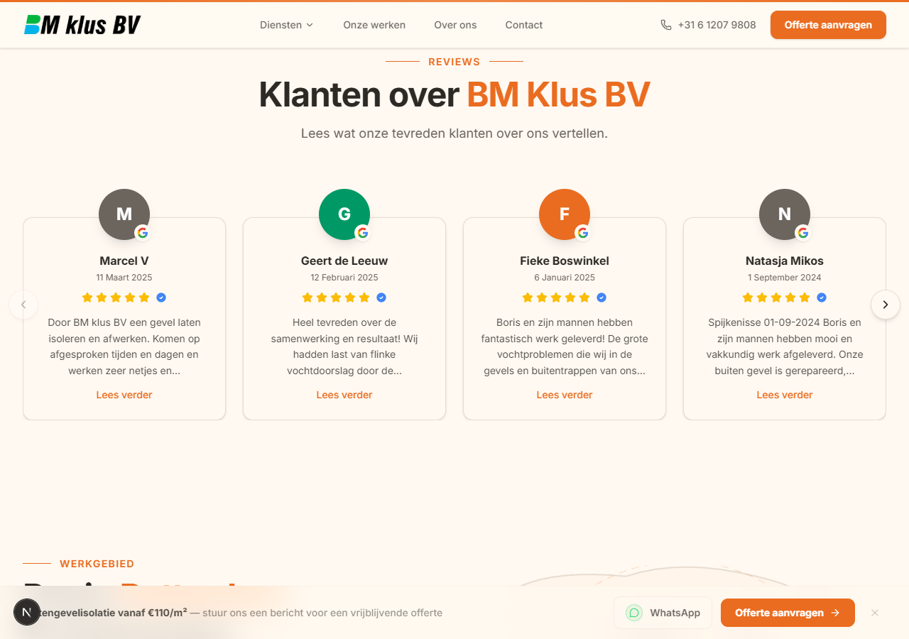
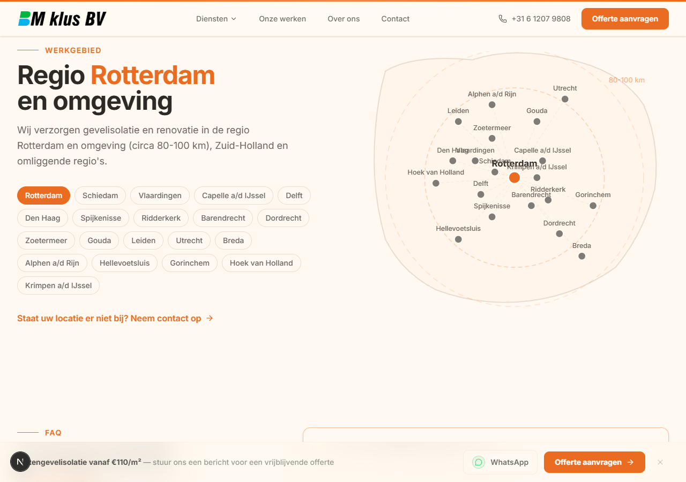
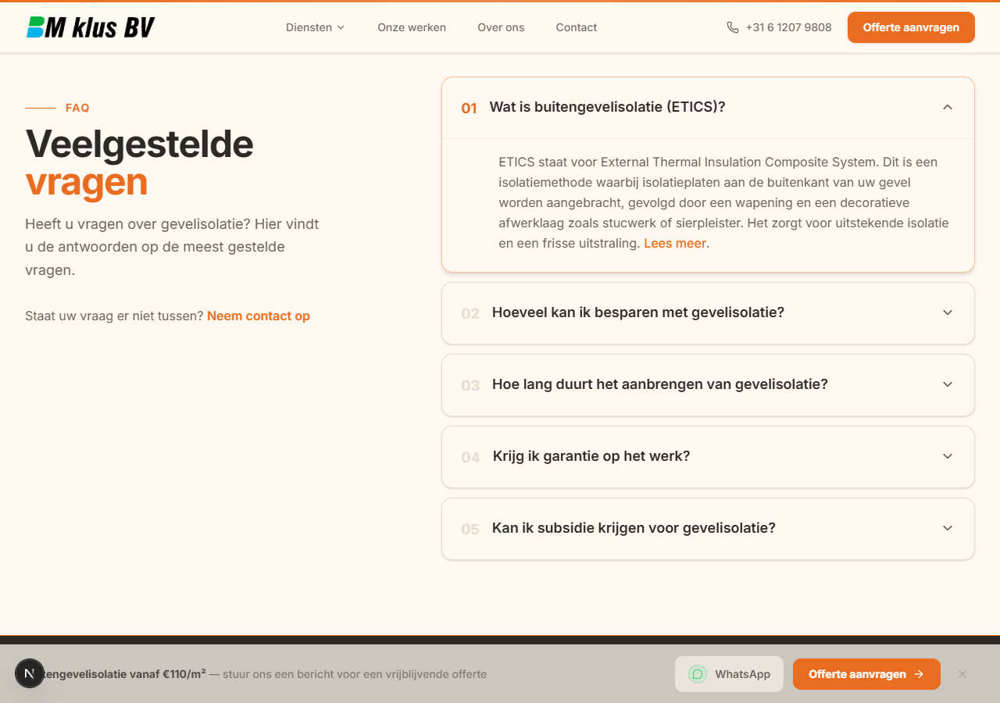

📊 Общая Оценка
Сайт имеет профессиональный вид с качественным контентом, но требует улучшений в консистентности дизайна, accessibility и микро-взаимодействиях.
Визуальная Консистентность
6.5/10
Типографика
7.0/10
Цветовая Схема
8.0/10
Spacing & Layout
6.0/10
Accessibility
5.0/10
Общая Оценка
6.8/10
01-hero
Scroll: 0pxHero section (top of page)

🎨 Visual Observations:
✅ Сильные стороны:
- Отличная визуальная иерархия с оранжевым акцентом на ключевом слове
- Качественное фоновое изображение создает эмоциональную связь
- Четкий CTA с оранжевой кнопкой сразу привлекает внимание
- TrustStrip с рейтингом 4.8★ и сертификациями повышает доверие
⚠️ Проблемы:
- Белый текст местами теряется на светлых участках фото
- Spacing между USP элементами неравномерный (12-16px)
- Вторичная кнопка имеет низкий контраст с фоном
- Отсутствует тень у sticky header при скролле
🔧 Рекомендации:
- Добавить полупрозрачный градиент overlay (черный 0-40%)
- Унифицировать vertical spacing до 16px
- Добавить box-shadow: 0 2px 8px rgba(0,0,0,0.08) для header
- Использовать outline стиль для вторичной кнопки
02-truststrip-etics-start
Scroll: 700pxTrustStrip + start of ETICS section

🎨 Visual Observations:
✅ Сильные стороны:
- Чистая секция с хорошим white space
- Четкая визуальная иерархия (label → заголовок → описание → benefits)
- Stat cards (40%, 2-4x, 25jr) имеют единый стиль
- Benefits список с оранжевыми чекмарками хорошо читается
⚠️ Проблемы:
- Stat cards имеют слишком светлую границу (#E5E7EB)
- Иконки в stat cards не выровнены по базовой линии
- Border-radius фото слишком большой (12px)
- Badge на фото теряется на светлом фоне
🔧 Рекомендации:
- Усилить borders до #D1D5DB или добавить тень 0 1px 3px rgba(0,0,0,0.05)
- Сделать badge с фоном rgba(0,0,0,0.75) и белым текстом
- Уменьшить border-radius фото до 8px
- Выровнять иконки с использованием flexbox align-items: center
03-etics-benefits
Scroll: 1400pxETICS section (benefits + image)

🎨 Visual Observations:
✅ Сильные стороны:
- Карточный grid с 4 карточками смотрится профессионально
- Стрелки на карточках подсказывают интерактивность
- Все карточки имеют одинаковую высоту (equal heights)
- Качественные фотографии текстур материалов
⚠️ Проблемы:
- Фото обрезаны по-разному, нет единого aspect ratio
- Очень слабая тень на карточках (сливаются с фоном)
- Названия текстур слишком мелкие (~14px)
- Spacing вокруг секции неравномерный (top: 64px, bottom: 48px)
🔧 Рекомендации:
- Привести все фото к единому aspect ratio 16:9 или 4:3
- Увеличить тень: box-shadow: 0 4px 12px rgba(0,0,0,0.08)
- Увеличить шрифт названий до 16px с font-weight: 600
- Унифицировать vertical padding: py-24 (96px)
- Добавить hover: transform: translateY(-4px) + усиление тени
04-etics-finishes
Scroll: 2100pxETICS finishes section

🎨 Visual Observations:
✅ Сильные стороны:
- Нумерованный список услуг с четкой структурой (01-04)
- Активная услуга выделена оранжевой линией слева
- Фото профессионала за работой повышает доверие
- Badges (Energielabel, Vochtwerend, Geluidsdemping) хорошо структурированы
⚠️ Проблемы:
- Неактивные услуги (02-04) слишком светлые, сложно считывать
- Padding неравномерный между активной и неактивными услугами
- Фото обрезано слишком плотно к краю viewport
- CTA кнопка расположена несимметрично
🔧 Рекомендации:
- Сделать неактивные услуги темнее: color: #666 вместо #999
- Выровнять padding всех услуг: padding: 20px 24px
- Добавить margin-right для фото или использовать object-fit: cover
- Выровнять кнопку по левому краю текстового блока
05-services
Scroll: 2800pxServices section (Onze Diensten)

🎨 Visual Observations:
✅ Сильные стороны:
- Текстовый блок с описанием хорошо структурирован
- Badges с преимуществами легко сканируются
- Реальное фото специалиста за работой
- CTA кнопка "Alle diensten bekijken" имеет outline стиль
⚠️ Проблемы:
- Слишком много white space в середине секции
- Переход к секции "ONS PROCES" резкий, нет визуального разделителя
- Фото и текст не выровнены по высоте
- Отсутствует визуальная связь между услугами выше и этой секцией
🔧 Рекомендации:
- Уменьшить padding между блоками
- Добавить декоративный разделитель перед "ONS PROCES"
- Выровнять высоту текстового блока и фото с помощью flexbox
- Добавить subtle background для секции услуг
06-process
Scroll: 3500pxProcess section

🎨 Visual Observations:
✅ Сильные стороны:
- Визуальный timeline с 4 этапами легко понять
- Иконки четкие и соответствуют каждому этапу
- Первый этап выделен оранжевым кружком
- Expandable карточка "STAP 01" показывает подробности
⚠️ Проблемы:
- Соединительные линии между этапами слишком светлые (#E5E7EB)
- Spacing между иконками неравномерный
- Карточка стадии имеет слабую тень
- Иконки неактивных этапов слишком светлые
🔧 Рекомендации:
- Усилить линии до #D1D5DB или border-width: 2px
- Сделать равное spacing между иконками (gap: 80px)
- Увеличить тень карточки: box-shadow: 0 4px 16px rgba(0,0,0,0.1)
- Добавить оранжевый оттенок будущим иконкам: color: #FFB088
07-portfolio
Scroll: 4200pxPortfolio section

🎨 Visual Observations:
✅ Сильные стороны:
- Grid layout с 4 проектами выглядит сбалансированно
- Каждая карточка имеет локацию с pin иконкой
- Описания краткие и информативные (оранжевым цветом)
- Качественные профессиональные фото проектов
⚠️ Проблемы:
- Первое фото вертикальное, остальные горизонтальные (разные aspect ratios)
- Shadow consistency: у некоторых карточек тень сильнее
- В некоторых карточках текст обрезается
- Border-radius слишком большой (12px)
🔧 Рекомендации:
- Привести все фото к единому aspect ratio 4:3
- Унифицировать тени: box-shadow: 0 2px 8px rgba(0,0,0,0.08)
- Добавить min-height для текстовой части карточки
- Уменьшить border-radius до 8px
- Добавить hover: легкий подъем + усиление тени
08-reviews
Scroll: 4900pxReviews section

🎨 Visual Observations:
✅ Сильные стороны:
- Карусель с горизонтальным скроллом удобна для просмотра
- Google badge на аватарах повышает доверие
- 5 звезд + галочка визуально подтверждают верифицированные отзывы
- Даты публикации добавляют актуальности
⚠️ Проблемы:
- Цвета аватаров выбраны случайно (серый, зеленый, оранжевый)
- Карточки имеют разную высоту из-за разной длины текста
- Отзывы обрезаются без индикатора "читать дальше"
- Слабая тень на карточках
- Spacing между карточками слишком маленький (~12px)
🔧 Рекомендации:
- Унифицировать цвета аватаров: оранжевый или его оттенки
- Сделать все карточки одной высоты: min-height: 280px
- Добавить кнопку "Lees verder" оранжевым цветом
- Увеличить тень: box-shadow: 0 4px 12px rgba(0,0,0,0.08)
- Увеличить gap до 20px
- Добавить fade эффект для обрезанного текста
09-work-area
Scroll: 5600pxWork Area section

🎨 Visual Observations:
✅ Сильные стороны:
- Интерактивная карта визуально представляет зону обслуживания
- Кликабельные badges с городами удобны для навигации
- Rotterdam выделен оранжевым как активный
- CTA "Staat uw locatie er niet bij?" предлагает связаться
⚠️ Проблемы:
- Карта выглядит статично, нет индикации интерактивности
- Неактивные badges сливаются с фоном (светлый серый)
- Шрифт на badges слишком мелкий (~13px)
- Badges расположены слишком плотно
- Линии карты слишком тонкие и светлые
🔧 Рекомендации:
- Добавить hover эффект для badges: изменение фона + border
- Увеличить шрифт badges до 14px
- Увеличить gap между badges до 12px
- Сделать линии карты толще (stroke-width: 2px) и темнее
- Добавить пульсирующую точку на Rotterdam
- Сделать неактивные badges темнее: background: #E5E7EB
10-faq
Scroll: 6300pxFAQ section

🎨 Visual Observations:
✅ Сильные стороны:
- Accordion layout чистый и современный
- Нумерация 01-05 оранжевым для легкой навигации
- Первый вопрос открыт по умолчанию
- Хороший white space между вопросами
⚠️ Проблемы:
- Borders слишком светлые (#E5E7EB), items почти сливаются
- Chevron иконки слишком мелкие и светлые
- Открытый вопрос не выделяется визуально (кроме содержимого)
- Line-height текста ответа недостаточный (~1.4)
- Ссылка "Lees meer" без underline при hover
🔧 Рекомендации:
- Усилить borders до #D1D5DB или #BDBDBD
- Увеличить chevron иконки и сделать темнее
- Добавить border-left: 3px solid #FF7A3D для активного
- Увеличить line-height ответа до 1.6
- Добавить text-decoration: underline при hover
- Добавить анимацию: transition: all 0.3s ease